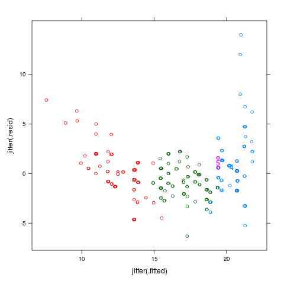
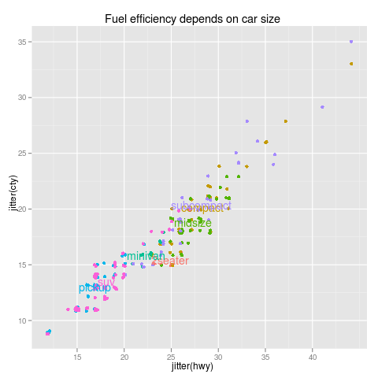

Positioning Function for the mean of each cluster of points.
get.means <- dl.indep(data.frame(x=mean(d$x),y=mean(d$y)))
|  | data(mpg,package="ggplot2") m <- lm(cty~displ,data=mpg) mpgf <- fortify(m,mpg) p <- xyplot(.resid~.fitted,mpgf,groups=factor(cyl)) direct.label(p,"get.means") |
|  |
data(mpg,package="ggplot2")
p <- qplot(jitter(hwy),jitter(cty),data=mpg,colour=class,
main="Fuel efficiency depends on car size")
direct.label(p,"get.means")
|
| Please send email to Toby Dylan Hocking if you are using directlabels or have ideas to contribute, thanks! |
| Documentation website generated from comments in R source code using inlinedocs. |
| validate |